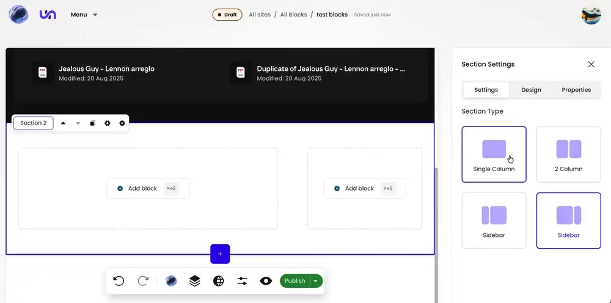
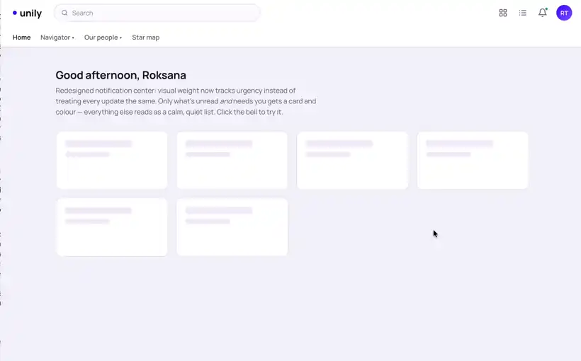
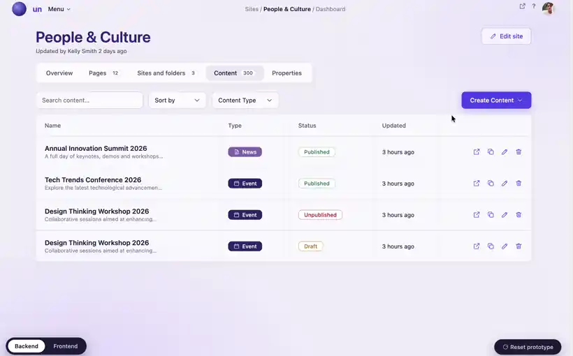
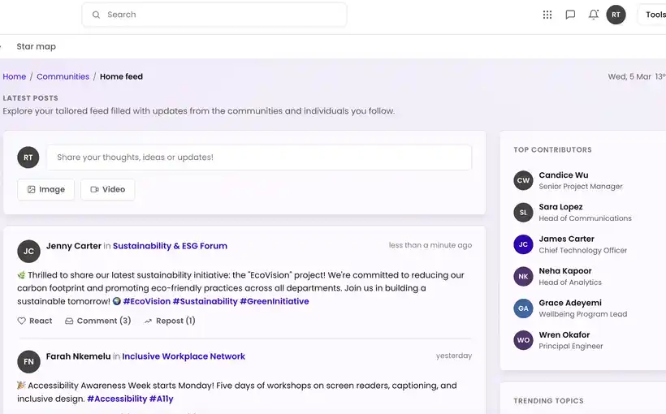

Design systems, enterprise products, and AI.
I'm a product designer with six years across enterprise B2B SaaS and consumer fintech. I built a design system from scratch for a banking app, and a 0-to-1 block system at Unily alongside our design system lead. In between I've owned flagship features on a complex enterprise platform. I work with AI daily — in how I design and in what I'm designing — and I'm happiest finding the one place software doesn't have to be dull.
The many hats
The systems builder
One library solo, one built with our design system lead. I’d rather fix the thing that makes the thing.
The pattern-breaker
Enterprise software doesn’t have to be dull. I find the one interaction worth doing differently — and defend it.
The AI tinkerer
Claude workflows, skills and a CRD generator my team actually uses.
The researcher
20+ discovery sessions and usability tests, including onsite with customers at bank kiosks. I’d rather be wrong in week two.
The partner
PRDs, descoping, refinement. I’d rather argue early than redesign late.
The maker
Art, craft, things with my hands. It leaks into the work, usefully.
Five projects, two you should read
A block system a CMS editor and an AI agent can both build with
Unily Futures launched with no block library, no visual language and no build experience. Two builders who fail in opposite directions, one system that had to serve both.

Notifications that people stopped switching off
Users had been asking for three years. The research pointed at an ambitious system; the loudest complaints were about things that were simply broken. So it shipped in three sequenced releases.


Flagship featureEvents
Five use cases forced through one content model designed for none of them. Rebuilt as a first-class object.
View →
Flagship featureCommunities
Five research problems that were all the same problem: social had never been designed as its own experience.
View →A banking app redesigned around real money, and real kiosks
End-to-end redesign of the core journeys — onboarding, biometric authentication, and depositing and withdrawing cash — in a context where getting it wrong means someone loses money at a machine, standing up, in daylight.
"Roksana is someone I can hand almost anything to and know she'll take it on and tackle it head-on."